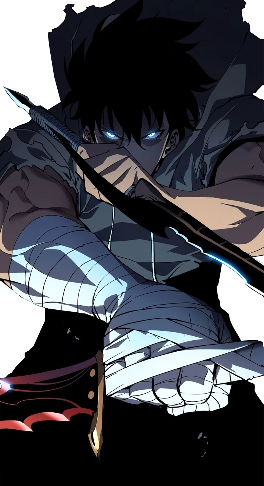

Sung Jin-Woo
Sung Jin-Woo (성진우 成 秦 禹) é o protagonista do Solo Leveling. Ele era conhecido anteriormente como o caçador mais fraco do mundo e mergulhou no caminho para se tornar o caçador mais forte do mundo depois que recebeu seu segundo despertar e acabou se tornando um jogador. Jin-Woo foi redespertado como Jogador após sobreviver ao Templo Cartenon e completar a missão secreta "Coragem dos Fracos". O misterioso Sistema permitiu que Jin-Woo subisse de nível sem limites e aumentasse sua força, ao contrário de todos os caçadores, que são incapazes de aumentar sua força a menos que sejam despertados.
